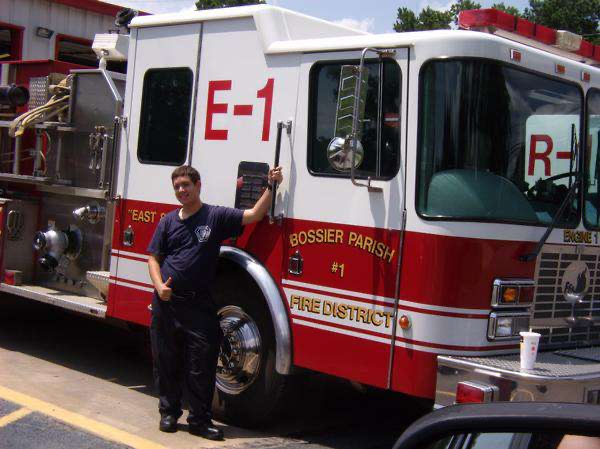

8+ Years
Building greenfield applications, delivering application modernizations, building authentication and authorization.
8+ years · Fintech · Government · Healthcare
From saving lives as a firefighter and EMT to building compliant, high-quality systems at scale. I bring calm under pressure, clear communication, and end-to-end ownership to every team I join.

FirefighterEMTEngineer
What I bring
Senior-level ownership, fast ramp-up, and the calm of someone who has worked in high-stakes environments.
Building greenfield applications, delivering application modernizations, building authentication and authorization.
I dive into complex environments, quickly learn the codebase and business domain, and start making meaningful contributions early in the project.
I enjoy helping other engineers grow through mentoring, collaboration, and peer programming. I'm also writing a book to help professionals make successful transitions into second careers in technology.
I work directly with stakeholders and distributed teams to translate business and compliance requirements into clear technical solutions while keeping everyone aligned through delivery.
Good engineering isn't just about the code I write. I want the team to have better documentation, better practices, shared knowledge, and fewer dependencies on any single person.
I take ownership from requirements through production. That means understanding the problem, defining the solution, coordinating implementation, validating the result, and making sure the feature works when it reaches production.
Working principles
The habits and standards I bring to every team and codebase.
I start by understanding the business requirement, the underlying problem, and the desired outcome. Aligning all three helps ensure we're solving the right problem and spending the company's time and resources wisely.
Complexity shouldn't exist simply because it's fashionable. I believe in clear documentation, practical development standards, and creating an environment where engineers can question unnecessary complexity and improve how we work.
I take pride in my work, but I never forget that the code belongs to the company. I build systems that are straightforward, maintainable, scalable, and easy for the next engineer to understand and extend.
The path here
Two careers, one throughline: staying calm, making decisions, and owning the outcome.

2009 – 2012
Built the discipline, teamwork, and urgency that set me apart.
2012 – 2018
Learned how to make the right decisions with little to no room for error in high-stakes situations.
2018 – Present
Using the skills I learned as a firefighter and EMT (plus a little creativity) allows me to deliver results — not excuses.
Recent work
Systems delivered across fintech, government, healthcare, and insurance.
Fintech · Payments
Government · Modernization
Insurance · Security
Healthcare · Telehealth
Healthcare · Serverless
Shares the same codebase as VVF.
Healthcare · EHR
Open to meaningful conversations
I'm not actively looking, but I'm always open to conversations about impactful work.